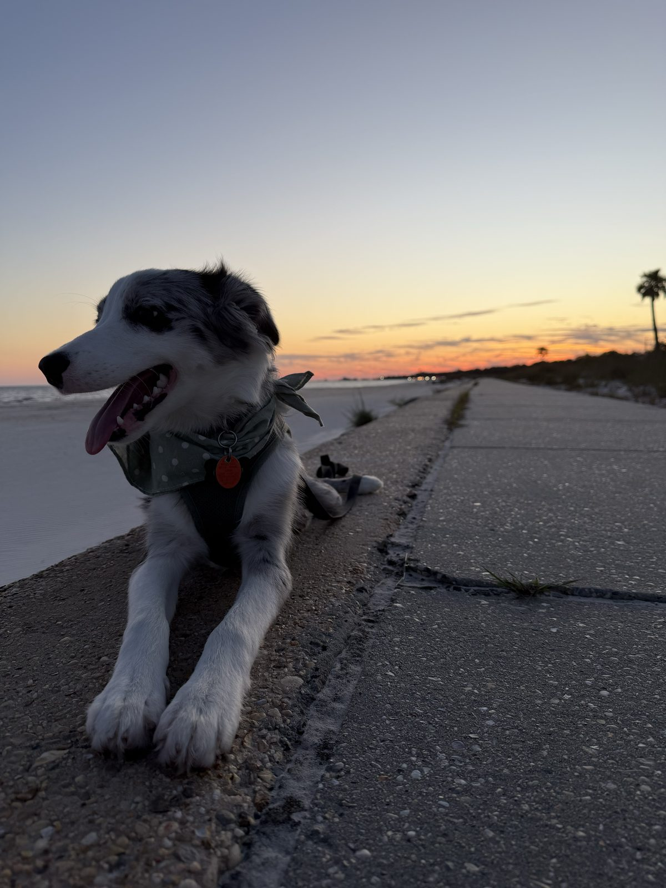
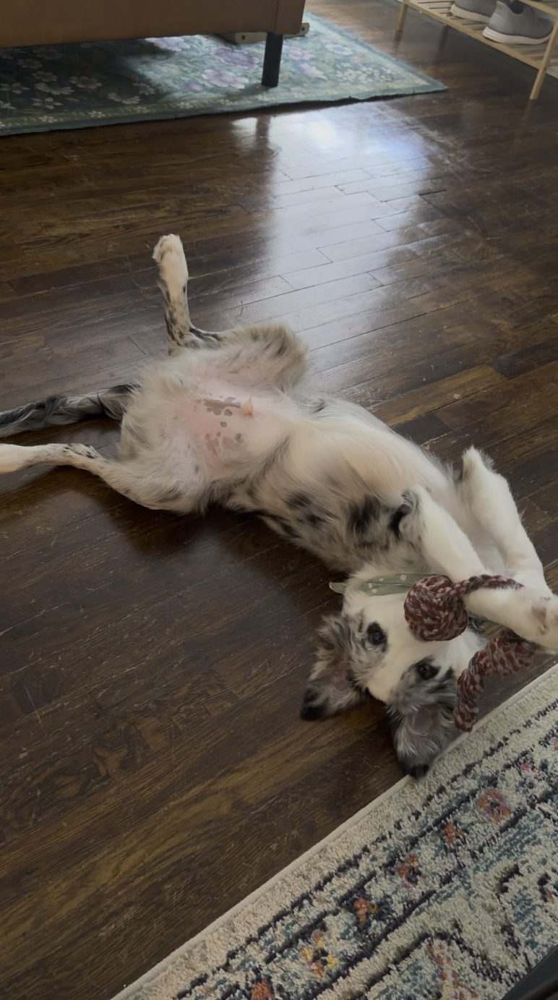
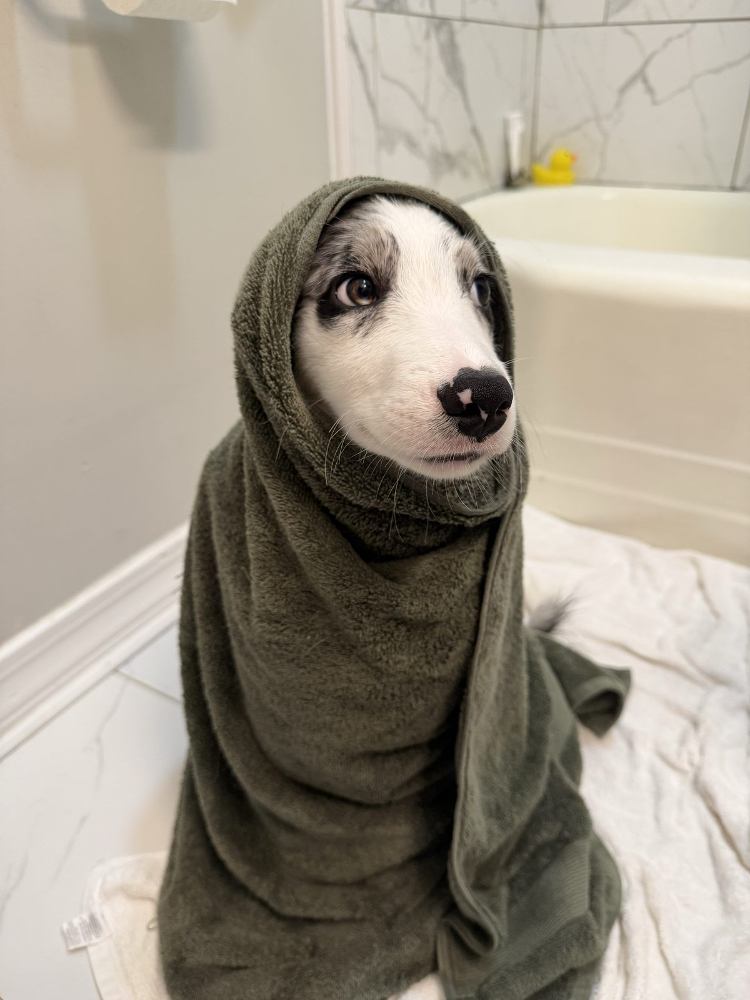

Caretaker for Spirit
- Pay $150/week + possible tips
- Days Tue-Thu, on call Mon & Fri
- Hours ~8 am-5 pm
- Term Month-to-month

I'm looking for a dependable, active, and engaged caretaker for Spirit, my male Border Collie born in April 2026. Tuesday through Thursday, you'll pick him up from my home near USM in the morning, keep him with you during the day, and bring him back in the evening.
Spirit is smart and energetic, and he hasn't been around other dogs yet, so ideally he'd be the only dog you're watching. He is never to be crated while in your care.
The Job
Training
Training is at the heart of this job. Spirit is held to extremely high standards, and being cute never gets him off the hook. I'm looking for someone who is committed to actively training him using researched training methods (YouTube has great dog training videos!). The goal is that between our combined efforts, he'll become a little better every day!
- Pickup Around 8:00 am, with a key I provide
- Drop-off Around 5:00 pm
- Location My home, 3 minutes from USM
- On call Mondays and Fridays, included in the weekly rate
- Days off Thanksgiving, Christmas, New Year's (each with the day before), and Good Friday
- Tracking Spirit wears an active AirTag at all times
I provide
- Food
- Treats and training rewards
- Harness and leash
- Toys and chews
- Water bowl
- Poop bags
- Brush and nail clippers
- Shampoo
- Accident-cleaning supplies
- Spirit's vet records
- An emergency vet-care fund
Pay

- Base $150/week by Zelle
- Tips Possible, based on performance
- Holidays Base is prorated
Tips are paid daily for documented care and training, such as:
- Outings to dog-friendly public places with lots of human interaction
- Progress on a list of skills and tricks we agree on
- Bathing, grooming, and nail clipping (he should always come home at least as clean as he left)
Requirements

- Background check and at least two references
- A car, and a dog-safe home where you'll be during the day (a fenced yard is a plus)
- A visit from me to see where Spirit will be staying before his first day
- Experience with puppies or high-energy breeds
- If you have a dog: current vaccination records
How to Apply
Reply through the posting where you found this page with your dog and training experience, where you live, your Tuesday through Thursday availability, and whether you have pets. I'll follow up with a short call and a meet-and-greet with Spirit.